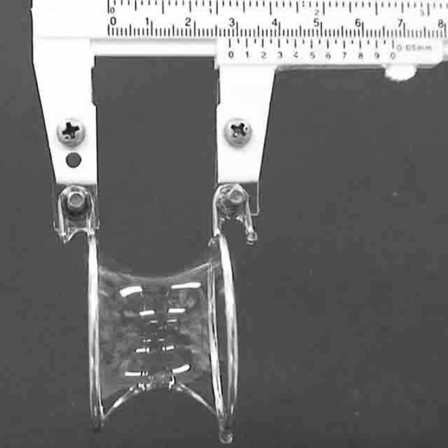
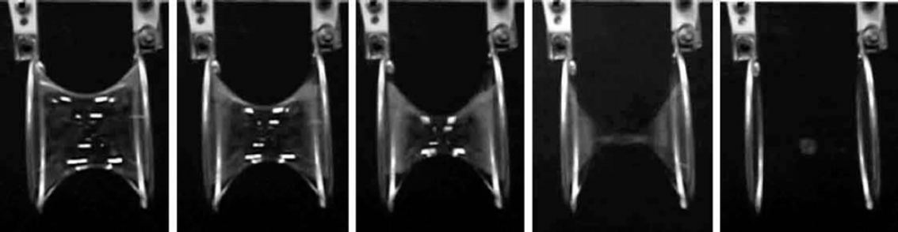
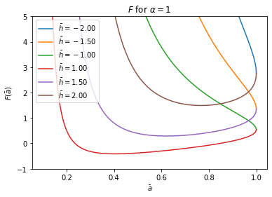
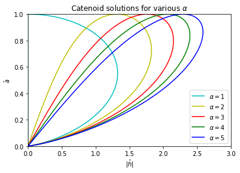
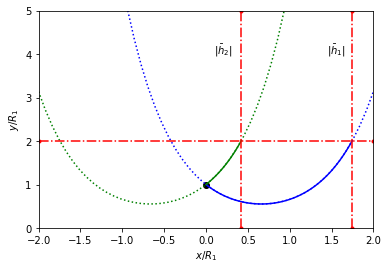
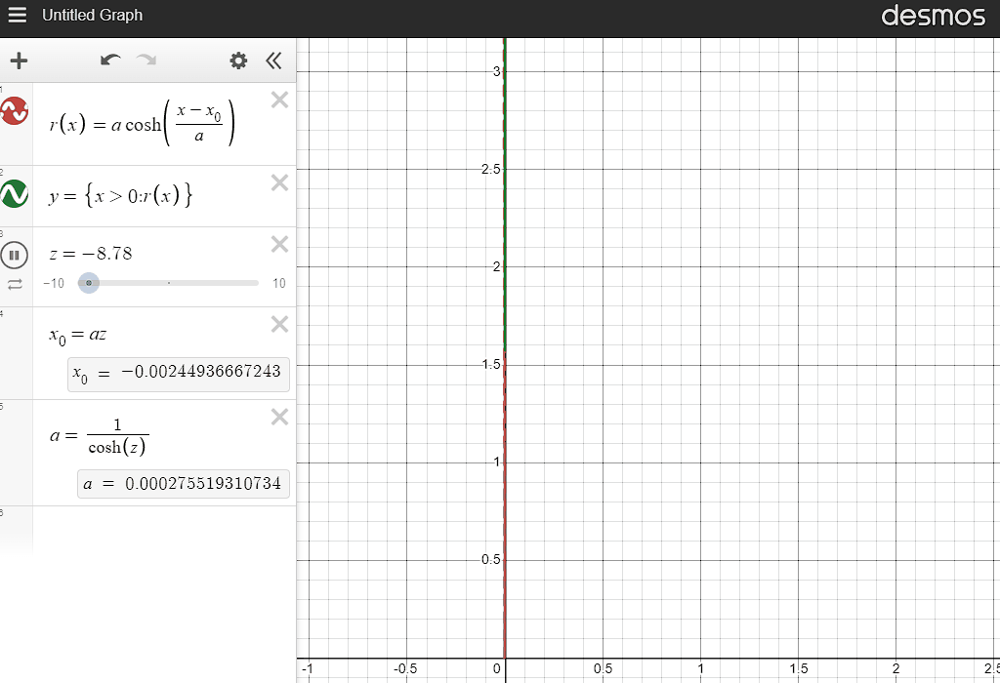
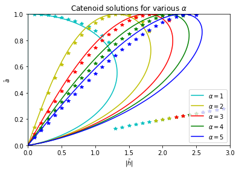
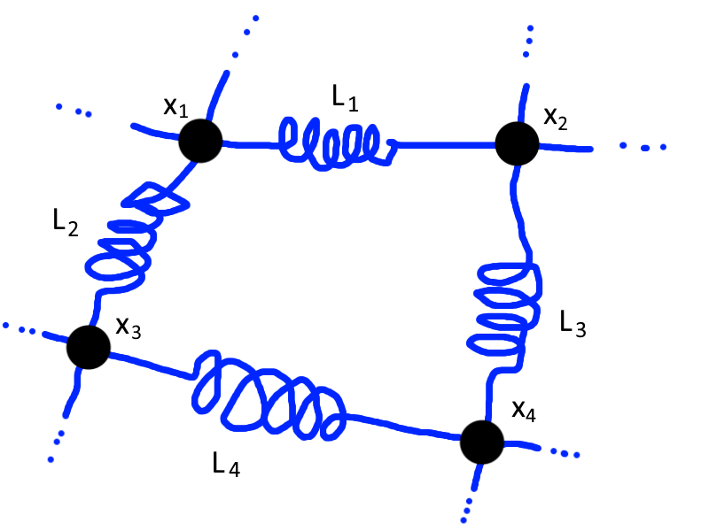
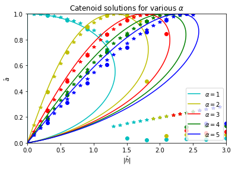

The catenoid is a solution to the two-ring soap film problem — that is, the shape formed by a soap film around two rings. After deriving analytical results, I validate them using two numerical models, which I also use to corroborate experimental results found in two papers.
Introduction
We will not go into detail on the molecular physics of liquids, but instead take the following concept of surface tension as fact:
Absent other forces, a liquid will "attempt" to minimize its surface area.
The problem of what shape a soap film wil make then becomes a problem of surface minimization.

The way the two rings are set up, the system is rotationally symmetric (discounting gravity), so we can assume that the surface will also be rotationally symmetric.
Suppose the first ring lies on the \$yz\$-plane and has radius \$R_1\$, while the second ring lies on the \$x=h\$ plane with radius \$R_2\$. Ito and Sato (2010)[1] studies the case \$R_1 = R_2\$ experimentally while Salkin et al (2014)[2] examines the general case. I will reference these papers multiple times and will henceforth refer to them as IS (2010) and SSPC (2014) respectively.
The Analytical Solution
We can use the calculus of variations to solve this problem. The surface area is calculated as the area of a surface of revolution, in this case, about the \$x\$-axis:
\[ A = \int_0^{2\pi} \int_{0}^{h} r(x)\sqrt{ 1 + \left(r'(x)\right)^2} ~ dx~d\phi \] \[ = 2\pi \int_{0}^{h} r(x)\sqrt{ 1 + \left(r'(x)\right)^2} ~ dx \] where \$r(x)\$ is the distance from the central axis at some value \$x\$. Without the rotationally-symmetric assumtion, \$r\$ would have to be a function of both \$x\$ and \$\phi\$.
We can consider \$A\$ as a function of \$r\$, so that the solution for the soap film problem is the function \$r\$ that minimizes \$A\$. To solve this, we utilize the Euler-Lagrange equation:
\[ \frac{\partial f}{\partial r} - \frac{d}{dx}\left(\frac{\partial f}{\partial r'}\right) = 0 \] where \$f(x,r,r') = r(x)\sqrt{ 1 + \left(r'(x)\right)^2}\$ is the integrand in the area formula. This simplifies to
\[ 1 + \left(r'\right)^2 - rr'' = 0 \]
The Manim animation below describes how I simplified the left-hand side. The denominator is never zero and is thus removed without issue when evaluating when the expression is zero.

If \$r\$ becomes \$0\$, this model will break, so we can assume \$r\$ will attain a minimum value \$\tilde a > 0\$ at \$x = \tilde x_0\$. We are allowed to make this assumption from the fact that \$r\$ is defined on a compact (closed and bounded) set, namely \$\[0,h]\$. \$r\$ can attain that value at multiple different values of \$x\$, but we can pick one of them. When we find a solution, however, we will find that this \$\tilde x_0\$ is unique.
This \$r(x) > 0\$ assumption does have experimental basis, as noted in IS (2010)[1], where the film collapses and separates when \$r\$ reaches zero, eventually becoming two discs filling the interior of each ring. This is a stationary solution (local minimum), and is also mentioned in SSPC (2014)[2]. However, as we are looking at \$r\$ as a function of \$x\$, we can never see this solution with our current formulation.

To solve the Euler-Lagrange equation, I will use uniqueness to completely characterize the functions \$r\$ can take the shape of, and then find a function that fits our boundary conditions: \[r(0) = R_1,~ ~ ~ ~ r(h)=R_2\] We have a system of two ordinary differential equations:
Set \$s = r'\$ so that \[ \begin{array}{ccl} r' &=& s\\ s' &=& \frac{1 + s^2}{r} \end{array} \]
Considering an initial condition \$r(0)=R_1\$, \$s(0)=s_0\$ for some \$s_0\$, we have a unique solution to this problem.
[Expand] Details for Uniqueness of an initial value problem (IVP)
Uniqueness follows from the Picard-Lindelöf theorem (Theorem 2.2, pp. 38 of Teschl (2012)[3]), which determines that there is a unique solution to an IVP \$\vec y'(t) = f(t,\vec y)\$, \$\vec y(t_0) = \vec y_0\$ under certain conditions.
-
\$f\$ is Lipschitz continuous in \$\vec y\$. This is a weaker condition than differentiability. Indeed, \$f\$ is continuously differentiable in both \$r\$ and \$s\$, and thus differentiable in \$(r,s)\$. I should note that we needed the \$r \ge \tilde a\$ assumption for this.
-
\$f\$ is uniformly continuous in \$t\$. This is immediate because \$f\$ has no \$t\$ dependence (\$x\$, in our case).
Then a unique solution exists on an interval around \$t_0\$. This interval comes from where we can define the region of continuities. In our particular case, the first condition holds on intervals \$\tilde a \le r \le L_r\$ and \$|s| \le L_s\$ for any \$L_r > \tilde a\$ and \$L_s > 0\$, and the second condition holds on the entire real number line. As long as the solution curve \$(x,r,s)\$ does not leave this region, the uniqueness holds.
Consider the curve
\[ r(x) = A\cosh\left(\frac{x - B}{A}\right), ~ ~ ~ s(x) = r'(x) = \sinh\left(\frac{x-B}{A}\right) \] \[ 1 + \left(r'\right)^2 - rr'' = 1 + \left(\sinh\left(\frac{x - B}{A}\right)\right)^2 - A\cosh\left(\frac{x - B}{A}\right)\cdot \frac{1}{A}\cosh\left(\frac{x - B}{A}\right) \] \[ =1 + \sinh^2\left(\frac{x - B}{A}\right) - \cosh^2\left(\frac{x - B}{A}\right) = 0 \] where the last equality comes from the identity \$\cosh^2(\theta) - \sinh^2(\theta) = 1\$.
If we pick \$B/A = -sinh^{-1}(s_0)\$ and \$A = R_1/\cosh(-B/A)\$, then we have a solution to the IVP. As a remark, the function \$r\$ only has one minimum value, which is what I mentioned earlier. However, the absolute minimum, \$a\$, for the hyperbolic cosine function might not lie in \$\[0,h]\$. In the case that it is, we find \$B = \tilde x_0\$ and \$A = \tilde a\$. Going forward, I will use \$x_0\$ in place of \$B\$ to convey that \$B\$ is the minimizer of the hyperbolic cosine and \$a\$ in place of \$A\$ to convey that \$A\$ is the minimum of the hyperbolic cosine.
Because \$s_0\$ was an arbitrary choice, we conclude that all stationary solutions to the soap film problem must be a catenoid:
Suppose \$r_1\$ is a stationary solution. Set \$s_0 = r_1'(0)\$ and construct \$r\$ as above. Due to uniqueness of the IVP, we must have \$r_1(x) = r(x)\$ for all \$x\$.
So for any \$R_1,R_2,h\$, we can find the values of \$a\$ and \$x_0\$ that make \$r(0) = R_1\$ and \$r(h)=R_2\$. This is noted in part II.B of SSPC (2014)[2], where these conditions provide the system of equations:
\[ \begin{array}{ccccl} r(0) &=& a\cosh\left(-\frac{x_0}{a}\right) &=& R_1\\ r(h) &=& a\cosh\left(\frac{h - x_0}{a}\right) &=& R_2 \end{array} \]
The second equation can be expanded to eliminate \$x_0\$: \[ R_2 = a\cosh\left(\frac{h - x_0}{a}\right) = a\left(\cosh\frac{h}{a}\cosh\frac{-x_0}{a} + \sinh\frac{h}{a}\sinh\frac{-x_0}{a}\right) \] \[ = a\left(\frac{R_1}{a}\cosh\frac{h}{a} \pm \sinh\frac{h}{a}\sqrt{\frac{R_1^2 }{a^2} - 1}\right) \] where \$\sinh\left(\cosh^{-1}(Z)\right) = \sqrt{Z^2 - 1}\$. We use this to substitute out \$\frac{x_0}{a}\$ using \$Z = R_1/a\$ from the first equation. However, \$\cosh^{-1}(Z) \ge 0\$ for all values of \$Z\$. We need to account for positive values of \$x_0\$: \[\cosh^{-1}(R_1/a) = \pm \frac{x_0}{a}\]
We can get rid of this ambiguous sign by letting \$h\$ take negative values. Because \$\cosh\$ swallows the sign (it is an even function), we can arrive at
\[ R_2 = a\left(\frac{R_1}{a}\cosh\frac{\pm h}{a} - \sinh\frac{\pm h}{a}\sqrt{\frac{R_1^2 }{a^2} - 1}\right) \]
The choice to use a minus sign instead of a plus sign was arbitrary, but I found that it is nicer to work with. The solution catenoid will have a parameter \$a\$ given by a zero to the equation \[ R_1\cosh\frac{ \pm h}{a} - \sinh\frac{\pm h}{a}\sqrt{R_1^2 - a^2} - R_2 = 0 \] I should note that this is not exactly the same equation as SSPC (2014)[2]. We can non-dimensionalize this equation by scaling by \$R_1\$ to eliminate \$R_1\$ from the equation. If we define \$\bar h = \frac{\pm h}{R_1}\$, \$\bar a = \frac{a}{R_1}\$, and \$\alpha = \frac{R_2}{R_1}\$, we can obtain \[ F(\bar a) = \cosh\frac{\bar h}{ \bar a} - \sinh\frac{\bar h}{\bar a}\sqrt{1 - \bar a^2} - \alpha = 0 \]
\$\bar a\$ takes values in \$(0,1]\$. For different values of \$\alpha\$, \$F\$ only differs by a constant, so I can plot \$F\$ for a fixed \$\alpha = 1\$ (the equal ring case), and the shapes will be the same for any other \$\alpha\$.

This shows that \$F(\bar a) = 0\$ has zero one or two solutions for any given \$\bar h > 0\$. When \$\bar a\$ reaches 1, \$-\bar h\$ serves as a continuation of the solution. This is why, despite \$h > 0\$, we have to consider the negative solutions \$\bar h < 0\$. Without knowing \$\bar a\$, we can tell if there is a negative \$\bar h\$ solution by checking if \$F(1) < 0\$, in which case, the negative \$\bar h\$ yields one solution. This becomes apparent for larger \$\alpha\$.
We can alternatively solve for \$\bar h\$ to plot the relationship between \$\bar h\$ and \$\bar a\$, similar to SSPC (2014)[2] figure 4. To solve, we notice that \$F\$ can be converted into a quadratic in \$\exp(\bar h / \bar a)\$, with solution
\[ \bar h = \bar a\ln\left(\frac{\alpha \pm \sqrt{\alpha^2 - \bar a^2}}{1 - \sqrt{1 - \bar a^2}}\right) \]
[Expand] Derivation of solution
\[ 0 = \cosh\frac{\bar h}{ \bar a} - \sinh\frac{\bar h}{\bar a}\sqrt{1 - \bar a^2} - \alpha \] \[ 0 = \frac{e^{\bar h/\bar a}}{2}\left(1 - \sqrt{1 - \bar a^2}\right) + \frac{e^{-\bar h/\bar a}}{2}\left(1 + \sqrt{1 - \bar a^2}\right) - \alpha \] \[ 0 = \frac{e^{2\bar h/\bar a}}{2}\left(1 - \sqrt{1 - \bar a^2}\right)- \alpha e^{\bar h / \bar a} + \frac{1}{2}\left(1 + \sqrt{1 - \bar a^2}\right) \]
\[ e^{\bar h / \bar a} = \frac{\alpha \pm \sqrt{\alpha^2 - \left(1 - \sqrt{1 - \bar a^2}\right)\left(1 + \sqrt{1 - \bar a^2}\right)}}{1 - \sqrt{1 - \bar a^2}} \] \[ = \frac{\alpha \pm \sqrt{\alpha^2 - 1 + (1 - \bar a^2)}}{1 - \sqrt{1 - \bar a^2}} = \frac{\alpha \pm \sqrt{\alpha^2 - \bar a^2}}{1 - \sqrt{1 - \bar a^2}} \] \[ \bar h = \bar a\ln\left(\frac{\alpha \pm \sqrt{\alpha^2 - \bar a^2}}{1 - \sqrt{1 - \bar a^2}}\right) \]
We must take care here because this may yield a negative \$\bar h\$. I account for this by plotting the absolute value of \$\bar h\$.

I would like to take particular note of the \$\alpha = 1\$ case, which lines up with what was found in IS (2010)[1], forming a parabola-like shape with maximum point \[\bar a = 0.552,~ ~ ~ \bar h = 1.325\]
which I found using a numerical maximization scheme. I should note that what does not appear on this plot is a vertical line on \$\bar h = 0\$ for the \$\alpha = 1\$ case. This represents the trivial solution when the rings are equal size. Putting the rings right next to each other will create a surface area of zero, which has to be the absolute minimum solution.
But why does \$\bar h\$ take two values? Given \$\bar a\$ we have completely characterized the catenoid, except for the horizontal offset \$x_0\$. If we want to pick \$x_0\$ so that the \$r(0) = R_1\$ condition holds, we have two choices of \$x_0\$ (except when \$1 = \bar a = a/R_1\$), namely
\[\pm \cosh^{-1}\left(\frac{1}{\bar a}\right)\]
We let \$\bar h\$ "swallow" the sign, effectively locking \$x_0\$ onto one side of the \$y\$-axis, namely, \$x_0 \ge 0\$. Taking the absolute value of \$\bar h\$ flips the axis. For example, if \$\alpha = 2, \bar a = 0.552\$, the solutions are depicted below.

Here, \$\bar h_2\$ was the negative solution, placed where the blue catenoid intersects \$\bar y = 2\$ to the left of \$x = 0\$. The reason why \$\bar a\$ can take two solutions for a given \$\bar h\$ is less straight forward, but involves how the shape of the catenoid changes. This can be seen by examining \$x_0 / a\$ as a parameter in \$r(x) = a\cosh\left(\frac{x - x_0}{a}\right)\$. In Desmos, I’ve written it as \$z\$:

Fixing the condition \$r(0) = R_1\$, both large positive and large negative \$z\$ yield a solution very close to a vertical line, so scanning along \$z\$, any given point on the curve will be "pushed" away from \$y=0\$ before being "pulled" back in as \$z\$ crosses 0. The nice thing about \$z\$ is that it is very easy to factor in the first boundary condition.
Given the intial conditions, we can use the following strategy to get the the two catenoids:
-
Obtain the first zero of \$F(\bar a)\$ as \$\bar a_1\$ using \$\bar h = h/R_1\$. This value will be between \$0\$ and any value \$\bar a_-\$ with \$F(\bar a_-) < 0\$. Such a value is easy to find numerically using a minimization technique. Then a simple bisection method can be used to obtain \$\bar a_1\$.
-
If \$F(1) = \cosh \bar h - \alpha > 0\$, then \$F\$ has the second zero, which can be obtained using a bisection method between \$\bar a_-\$ and \$1\$. Otherwise, find the second zero of \$F\$ using \$\bar h = -h/R_1\$. Write this zero as \$\bar a_2\$.
-
Obtain the two values of \$x_0\$ corresponding to each \$\bar a\$ value using one boundary condition on \$r\$. A negative \$x_0\$ will be taken when taking a \$\bar h = -h/R_1\$ solution.
Another option would be to scan across \$z\$, and find the parameter that minimizes the difference between \$r(h)\$ and \$R_2\$. Care must be taken, however, because large \$|z|\$ will produce incredibly large values of \$r(h)\$ due to \$\cosh\$.
[Expand] Javascript implementation of the first strategy
/**
* Finds the two solution catenoids for a given h and alpha. This
* is returned as an array [abar1,x0_1/abar1,abar2,x0_2/abar2]
* where abar1 and abar2 are the a-bar parameters for each catenoid
* and x0_1/a1 and x0_2/a2 are the x0 parameters for each catenoid,
* non-dimensionalized by their corresponding 'a' parameters.
*/
function find_catenoids(h,alpha,tol = 0.0001){
function Fp(a){
let temp = Math.sqrt(1 - a*a);
let temp2 = 1/(a*a);
return (a/temp - h*temp2)*Math.sinh(h/a) + temp2*temp*h*Math.cosh(h/a);
}
function F(a){
return Math.cosh(h/a) - Math.sinh(h/a)*Math.sqrt(1 - a*a) - alpha;
}
//Find a_ that has F(a_) < 0 using regular gradient descent
let a_ = 0.5;
let grad = 0, Fa = 0, eta = 0, gamma = 0, alpha0 = 0, p = 0;
let max_iters = 100;
while(F(a_) > 0 && max_iters > 0){
grad = Fp(a_);
if(Math.abs(grad) < 0.000001){
//safe to assume no solution exists
return [NaN,NaN,NaN,NaN];
}
Fa = F(a_);
gamma = 0.5;
eta = 0.5;
alpha0 = 0.7*Math.min(a_,1-a_);
p = -alpha0*Math.sign(grad);
while(F(a_ + p) - Fa > eta*grad*p){
p *= gamma;
}
a_ += p;
max_iters --;
}
if(max_iters == 0){
//safe to assume no solution exists
return [NaN,NaN,NaN,NaN];
}
//negative a_, so modified bisection method for first
let bis_a = 0, bis_b = a_, bis_c = a_/2;
//bis_a will evaluate to infty or > 0, bis_b will evaluate to < 0
let Fc = F(bis_c);//midpoint value
while(bis_b - bis_a > tol){
if(Fc < 0){
//zero is between a and c
bis_b = bis_c;
bis_c = (bis_a + bis_b)/2;
Fc = F(bis_c);
}else{
//zero is between c and b
bis_a = bis_c;
bis_c = (bis_a + bis_b)/2;
Fc = F(bis_c);
}
}
// result array by (a1,x0_1/R_1,a2,x0_2/R_1)
var RESULT = [bis_c,Math.acosh(1/bis_c),0,0];
//other value?
if(Math.cosh(h) > alpha){
//positive h: do bisection method again
bis_a = a_; bis_b = 1; bis_c = (1+a_)/2;
//F(bis_a) < 0, F(bis_b) > 0
Fc = F(bis_c);//midpoint value
while(bis_b - bis_a > tol){
if(Fc > 0){
//zero is between a and c
bis_b = bis_c;
bis_c = (bis_a + bis_b)/2;
Fc = F(bis_c);
}else{
//zero is between c and b
bis_a = bis_c;
bis_c = (bis_a + bis_b)/2;
Fc = F(bis_c);
}
}
RESULT[2] = bis_c;
RESULT[3] = Math.acosh(1/bis_c);
}else{
//negative h: bisect between 0 and 1.
h = -h;
bis_a = 0; bis_b = 1; bis_c = 0.5;
//F(bis_a) > 0, F(bis_b) < 0
Fc = F(bis_c);//midpoint value
while(bis_b - bis_a > tol){
if(Fc < 0){
//zero is between a and c
bis_b = bis_c;
bis_c = (bis_a + bis_b)/2;
Fc = F(bis_c);
}else{
//zero is between c and b
bis_a = bis_c;
bis_c = (bis_a + bis_b)/2;
Fc = F(bis_c);
}
}
RESULT[2] = bis_c;
RESULT[3] = -Math.acosh(1/bis_c);
}
return RESULT;
}Numerical Validation with the Surface of Revolution Assumption
Instead of solving the Euler-Lagrange equations, we can discretize \$r\$ and minimize the surface area function. I will use a linear interpolation scheme for simplicity of implementation.
Discretize \$r\$ into \$N+1\$ points by
\[ r(x_n) = r_n,~ ~ ~ x_n = h\frac{n}{N},~ ~ ~ 0\le n \le N \] \[ r\left(x_n+\frac{h}{N}t\right) = (1-t)r_n + tr_{n+1}, ~ ~ \text{where }0\le t \le 1 \]
Then the area formula becomes
\[ A = 2\pi \sum_{n=0}^{N-1} \sqrt{ \frac{ h^2 }{ N^2 } + \left(r_{n+1} - r_n\right)^2} \left(\frac{r_{n+1} + r_n}{2}\right) \]
[Expand] Derivation of discrete area formula
\[ A= 2\pi \int_{0}^{h} r(x)\sqrt{ 1 + \left(r'(x)\right)^2} ~ dx \] \[ = 2\pi \sum_{n=0}^{N-1} \int_{x_n}^{x_{n+1}} \left( \left(1-\frac{N}{h}(x-x_n)\right)r_n + \frac{N}{h}(x-x_n)r_{n+1}\right)\sqrt{ 1 + \left(\frac{r_{n+1} - r_n}{h/N}\right)^2} ~ dx \] \[ = 2\pi \sum_{n=0}^{N-1} \frac{ N }{ h }\sqrt{ \frac{ h^2 }{ N^2 } + \left(r_{n+1} - r_n\right)^2} \int_{0}^{1} \big( (1-t)r_n + tr_{n+1}\big) \frac{h}{N} ~ dt \] \[ = 2\pi \sum_{n=0}^{N-1} \sqrt{ \frac{ h^2 }{ N^2 } + \left(r_{n+1} - r_n\right)^2} \int_{0}^{1} r_n +t(r_{n+1} -r_n) ~ dt \] \[ = 2\pi \sum_{n=0}^{N-1} \sqrt{ \frac{ h^2 }{ N^2 } + \left(r_{n+1} - r_n\right)^2} \left(\frac{r_{n+1} + r_n}{2}\right) \]
I additionally calculate a formula for the gradient of \$A\$ by hand. We could use a finite difference formula instead, but an exact solution can be calculated relatively easily, as at most two terms of the summation depend on a given \$r_k\$. Moreover, from our boundary conditions, we can set \$\frac{\partial A}{\partial r_0} = \frac{\partial A}{\partial r_N} = 0\$.
\[ \frac{\partial A}{\partial r_n} = \frac{2\pi h}{N}\left(\frac{r_n^2 - r_nr_{n+1} + \frac{h^2 }{2N^2 } }{\sqrt{\frac{h^2 }{N^2 } + (r_{n+1}-r_n)^2}} + \frac{r_{n}^2 - r_{n-1}r_{n} + \frac{h^2 }{2N^2 } }{\sqrt{\frac{h^2 }{N^2 } + (r_{n}-r_{n-1})^2}}\right) \] \[ \nabla A = \begin{bmatrix}0\\\frac{\partial A}{\partial r_1} \\\frac{\partial A}{\partial r_2} \\ \vdots \\ \frac{\partial A}{\partial r_{N-1}}\\0\end{bmatrix} \]
[Expand] Derivation of partial derivatives
For the term corresponding to the segment from \$x_k\$ to \$x_{k+1}\$, we have \[ \frac{\partial}{\partial r_n}\sqrt{ \frac{ h^2 }{ N^2 } + \left(r_{n+1} - r_n\right)^2} \left(\frac{r_{n+1} + r_n}{2}\right) \] \[ = \frac{(r_{n+1} + r_n)(r_n - r_{n+1})}{2\sqrt{\frac{ h^2 }{ N^2 } + (r_{n+1}-r_n)^2}} + \frac{1}{2}\sqrt{ \frac{ h^2 }{ N^2 } + \left(r_{n+1} - r_n\right)^2} \] \[ = \frac{r_n^2 - r_{n+1}^2 + \frac{h^2 }{N^2 } + \left(r_{n+1} - r_n\right)^2}{2\sqrt{\frac{ h^2 }{ N^2 } + (r_{n+1}-r_n)^2}} = \frac{r_n^2 - r_nr_{n+1} + \frac{h^2 }{2N^2 } }{\sqrt{\frac{ h^2 }{ N^2 } + (r_{n+1}-r_n)^2}} \] For the term corresponding to the segment from \$x_{n-1}\$ to \$x_{n}\$, we can avoid doing more work by noticing that the above has the same derivative for \$x_{n+1}\$, but with the indices swapped, that is \[ \frac{\partial}{\partial r_{n+1}}\sqrt{ \frac{h^2 }{N^2 } + \left(r_{n+1} - r_n\right)^2} \left(\frac{r_{n+1} + r_n}{2}\right) = \frac{r_{n+1}^2 - r_nr_{n+1} + \frac{h^2 }{2N^2 } }{\sqrt{1 + (r_{n+1}-r_n)^2}} \] Then we just need to reduce the indices by one \$(n+1 \to n)\$.
To find the minimizer of \$A\$, I employ gradient descent. For ease of notation, I will use the vector \$\vec r\$ to represent \$\[r_1,... , r_{N-1}]^T\$. The goal is to minimize \$A(\vec r)\$. A minimum value is a stationary solution, so we should also see \$\nabla A(\vec r)\$ go to zero.
[Expand] Details for Gradient Descent
Gradient Descent forms a sequence of vectors \$\left(\vec r_(j)\right)\$ such that \$A\left(\vec r_{j+1}\right) < A\left(\vec r_{j}\right)\$ and eventually converges to a local minimum.
This is done by taking a step in the direction \$\vec p = -\nabla A(\vec r_j)\$. Because \$A\$ is differentiable, there is a value \$\varepsilon\$ with which \$A(\vec r_j + a\vec p) < A(\vec r_j)\$ for all \$a\in(0,\varepsilon)\$. So after finding such an \$a\$, we can iteratively define \$\vec r_{j+1} = \vec r_{j} + a\vec p\$. To find this \$a\$, I use the backtracking line search with the Armijo Condition[4]. This is done by taking \$a = \alpha_0 \gamma^{i}\$, with \$i\$ as the smallest non-negative integer such that
\[ A\left(\vec r_j + \alpha_0 \gamma^{i} \vec p\right) - A\left(\vec r_j\right)> \eta \alpha_0 \gamma^{i} \nabla A\left(\vec r_j\right)^T \vec p = -\eta \alpha_0 \gamma^{i} \left|\nabla A\left(\vec r_j\right)\right|^2 \]
Here, \$\alpha_0\$ is the maximum step size, \$0 < \gamma < 1\$ is the factor which we shrink by for every check, and \$0 < \eta < 1\$ specifies a condition for how much we expect the linear approximation of \$A\$ to hold. In his original paper, Armijo uses \$\eta=\gamma = \frac{1}{2}\$, so I will as well.
The relevant code to produce the simulation below is found in numerical1.js.
0
0
0
This discretization reduces the space of functions \$r\$ to a dimension \$N+1\$ vector space (\$N-1\$ after boundary conditions). Like using the second derivative test to test if something is a minimum, we can use the Hessian.
\[(H)_{i,j} = \frac{\partial^2 A}{\partial r_i \partial r_j}\] The analogous Taylor series to higher dimensions is \[A(\vec r + \Delta \vec r) = A(\vec r) + \nabla A(\vec r)^T\Delta \vec r + \frac{1}{2} \Delta \vec r^T H(\vec r) \Delta\vec r + O(\Delta \vec r^3)\]
At either catenoid solution, the gradient is very close to zero (in fact, from the Euler-Lagrange analysis, would be exactly zero in the limit as \$N \to \infty\$). We can analyze the Hessian to get an idea of how small deviations from the catenoid solutions change the area, which will provide an idea their stability. Because the Hessian has \$(N-1)^2\$ terms, I will only focus on the diagonal entries of the Hessian. A more holistic approach would be to use the eigenvalues and eigenvectors to analyze the directions \$\Delta \vec r\$ increase or decrease at a given point, but calculating the eigendecomposition is notoriously difficult, especially without the use of pre-existing libraries. The following values change with the simulation above.
Another useful value is \$\vec v^T H \vec v\$, where \$\vec v\$ is all ones. This corresponds with the second derivative if we only let the nodes shift in the same direction (all up or all down). Intuitively, if adjacent nodes move away from each other, the surface area will tend to increase, so this choice of \$\vec v\$ gives some insight to the best-case stability:
The second catenoid solution admits a positive value of \$\vec v^T H \vec v\$, which provides insight into how it is a local minimum.
The first catenoid solution is at a saddle point. While individual nodes are at their optimal values, shifting the entire shape up or down will decrease the surface area, as evidenced by \$\vec v^T H \vec v < 0\$ and using \$\Delta \vec r = \varepsilon \vec v\$ in the Taylor series for small enough \$\varepsilon\$.
When the shape is slightly above the first catenoid solution, it goes to the second catenoid solution, which has a lower surface area. When starting below the first catenoid solution, it goes to \$\vec r = 0\$, which implies that the film collapses, meaning that the first catenoid solution is unstable. This lines up well with unstable catenoid mentioned in IS (2010)[1] and SSPC (2014)[2].

Here, I plot various values onto the analytically obtained catenoid solutions. To do this, I used a one sided finite difference to approximate \$s_0\$ as in the initial value problem and obtained \$a\$ by substituting in that approximation. For parameters, I set \$R_1 = 1, N=10\$ and the Line initial condition before taking 400 steps. The points are very close, and I suspect that the majority of the error is coming from the \$s_0 = N/h(r_1 - r_0)\$ approximation. The points towards the bottom of the graph for larger \$h\$ are there because I did not remove data points where the model collapsed.
Numerical Simulation as a point-mass system
The numerical minimization scheme we used is not based on the physics of the soap film. It is based instead on a mathematical strategy to minimize an arbitrary function.
I pose that simulating the surface as a lattice will be a better model for how the surface behaves. Doing this, we provide inertial dynamics to the surface, whose energy has a correspondence with surface area (minimizing one minimizes the other). The next question would be about how to write the dynamics. I initially thought that approximating surface tension using springs would work.

The total energy is the sum of the energies on each spring. If we assume all the springs have the same constant \$k\$, we have energy and surface area
\[ U = \frac{k}{2}\left(L_1^2 + L_2^2 + L_3^2 + L_4^2\right) \]
This is proportional to area in the case of a square (\$L_1 = L_2 = L_3 = L_4\$ with \$A = L_1^2 \propto U\$), but the general case is not as nice. However, we do not have to design forces for surface area minimization by scratch, and use Lagrangian mechanics instead. By making potential energy proportional to surface area, the Euler-Lagrange equations will give us forces that attempt to minimize surface area.
\[ U = kA \]
The constant \$k\$ here is not to be confused with the spring constant, despite having the same units. To calculate surface area, we can break down the lattice into triangles and calculate their areas. For the diagram above, let \$v_1 = x_1-x_2\$, \$v_2 = x_1-x_3\$, and \$v_3 = x_1-x_4\$. The area of a triangle formed from \$v_1\$ and \$v_3\$ is
\[ A(v_1,v_3) = \frac{|v_1\times v_3|}{2} \]
so the quadrilateral has area \$A(v_1,v_3) + A(v_2,v_3)\$. Visually, we are cutting the quadrilateral across the diagonal connecting \$x_1\$ and \$x_4\$, and calculating the area of each triangle.
I ended up using a square lattice because it is easier to form the initial discretization point locations. If we use \$r_n\$'s as in the curve for the surface of revolution as before, we can fix an integer \$M\$, and set
\[ \vec x_{n,m} = \left(r_nx_n,r_n\cos \theta_m, r_n\sin\theta_m\right) \] \[ x_n = h\frac{n}{N}, ~ \theta_m = \frac{2\pi m}{M}, ~ 0 \le n \le N, ~ 0 \le m < M \]
where the \$\vec x_{n,m}\$ node is attached to the following nodes by a spring:
\[ \vec x_{n-1,m}, ~ ~ ~ \vec x_{n+1,m}, ~ ~ ~ \vec x_{n,m-1}, ~ ~ ~ \vec x_{n,m+1} \]
where the \$m = M-1\$ nodes are attached to the corresponding \$m = 0\$ nodes (that is, \$m\$ takes values in the integers mod \$M\$). For simplicity, I will implicitly refer to operations on the \$m\$ component modulo \$M\$ (\$0 - 1 = M-1\$).
Fortunately, we once again do not need to consider the dynamics of the \$n=0\$ and \$n=N\$ nodes because they satisfy the boundary condition, so the total energy can be described as \[ U = k\sum_{n=1}^{N} \sum_{m=0}^{M-1}\big( A(\vec x_{n,m} - \vec x_{n-1,m}, \vec x_{n,m} - \vec x_{n-1,m-1})\] \[~ ~ ~ ~ ~ ~ ~ ~ ~ ~ ~ ~ + A(\vec x_{n,m} - \vec x_{n,m-1},\vec x_{n,m} - \vec x_{n-1,m-1})\big) \]
Using the straightforward form for kinetic energy, we obtain the Lagrangian
\[ \mathcal L = \frac{\mu}{2}\sum_{n=1}^{N-1} \sum_{m=0}^{M-1} \dot{\vec x}_{n,m}\cdot \dot{\vec x}_{n,m} - k\sum_{n=1}^{N} \sum_{m=0}^{M-1}\big( A(\vec x_{n,m} - \vec x_{n-1,m}, \vec x_{n,m} - \vec x_{n-1,m-1})\] \[~ ~ ~ ~ ~ ~ ~ ~ ~ ~ ~ ~ + A(\vec x_{n,m} - \vec x_{n,m-1},\vec x_{n,m} - \vec x_{n-1,m-1})\big) \]
where \$\mu\$ is the mass of a single node (point mass). Because energy only depends on position, the Euler-Lagrange equations are of the form
\[ 0 = \frac{\partial \mathcal L}{\partial \vec x_{n,m}} - \frac{d}{dt}\frac{\partial \mathcal L}{\partial \dot{\vec x}_{n,m}} = -\frac{\partial U}{\partial \dot{\vec x}_{n,m}} - \mu\ddot{\vec x}_{n,m} \] Where, for shorthand, we write \[ \frac{\partial }{\partial v} =\left( \frac{\partial }{\partial v_x }, \frac{\partial }{\partial v_y }, \frac{\partial }{\partial v_z } \right) \] as the derivative in each component. Expanding the gradient of \$U\$ is a bit tedious, but from linearity and use of the chain rule, the problem collapses into solving for the derivatives of the triangle area formula:
\[ \frac{\partial}{\partial \vec r} A(\vec r - \vec r_1,\vec r - \vec r_2) = {\frac{\partial A(\vec r - \vec r_1,\vec r - \vec r_2)}{\partial(\vec r - \vec r_1)}} + \frac{ \partial A(\vec r - \vec r_1,\vec r - \vec r_2) }{\partial(\vec r - \vec r_2)} \] \[ = {\frac{\partial A(\vec r - \vec r_1,\vec r - \vec r_2)}{\partial(\vec r - \vec r_1)}} + \frac{ \partial A(\vec r - \vec r_2,\vec r - \vec r_1) }{\partial(\vec r - \vec r_2)} \]
[Expand] Expanding the gradient of \$U\$
For every interior point \$\vec x_{n,m}\$, there will be only 6 triangles that depend on that point. For each triangle, we can always choose to re-index the vertices so that \$\vec r = \vec x_{n,m}\$, so we only need to consider the above partial derivative of \$A\$. To further expand, I utilize two extentions of the product rule:
\[ (u \cdot v)' = u\cdot v' + v \cdot u' \]
\[ (u \times v)' = u\times v' + v \times u' \] so that
\[ \frac{\partial A(v_1,v_2)}{\partial (v_1)_x} = \frac{\partial}{\partial (v_1)_x} \frac{\sqrt{(v_1\times v_2)\cdot (v_1\times v_2)}}{2} = \frac{2(v_1\times v_2)\cdot(v_1\times v_2)'}{4\sqrt{(v_1\times v_2)\cdot (v_1\times v_2)}} \]
\[ = \frac{(v_1\times v_2)\cdot(v_1 \times v_2' + v_1'\times v_2)}{2\sqrt{(v_1\times v_2)\cdot (v_1\times v_2)}} = \frac{(v_1\times v_2)\cdot(e_1 \times v_2)}{2\sqrt{(v_1\times v_2)\cdot (v_1\times v_2)}} \]
where \$e_1\$ is the first elementary basis vector, \$(1,0,0)\$. With \$e_2 = (0,1,0),e_3=(0,0,1)\$, the other derivatives are similar
\[ \frac{\partial A(v_1,v_2)}{\partial (v_1)_y} = \frac{(v_1\times v_2)\cdot(e_2 \times v_2)}{2\sqrt{(v_1\times v_2)\cdot (v_1\times v_2)}} \]
\[ \frac{\partial A(v_1,v_2)}{\partial (v_1)_z} = \frac{(v_1\times v_2)\cdot(e_3 \times v_2)}{2\sqrt{(v_1\times v_2)\cdot (v_1\times v_2)}} \]
One simplification for \$\frac{\partial}{\partial \vec r} A(\vec r - \vec r_1,\vec r - \vec r_2)\$ follows from the fact that the cross product is anti-symmetric (\$u\times v = -v\times u\$), so \[ \frac{\partial A(v_1,v_2)}{\partial (v_1)_x} + \frac{\partial A(v_2,v_1)}{\partial (v_2)_x} = \frac{(v_1\times v_2)\cdot(e_1 \times v_2) + (v_2\times v_1)\cdot(e_1 \times v_2)}{2\sqrt{(v_1\times v_2)\cdot (v_1\times v_2)}} \]
\[ = \frac{(v_1\times v_2)\cdot(e_1 \times v_2 - e_1 \times v_2)}{2\sqrt{(v_1\times v_2)\cdot (v_1\times v_2)}} \]
We also need to add in a dissipative term. Without it, the suface will not settle at a minimum and instead continue to oscillate. Setting \$\alpha = k / \mu\$ and adding a dissipation term \$\beta\$, we can write the equations of motion as the modified Euler-Langrange equation:
\[ \ddot{\vec x}_{n,m} = -2\beta \dot{\vec x}_{n,m} - \alpha\frac{\partial A}{\partial \vec x_{n,m}} \]
I opt to use Euler’s method, because we only care about what occurs asymptotically in time for a dissipative system, so high accuracy is not needed. I should note, however, that Euler’s method tends to overshoot on oscillatory problems, making \$beta\$ much more necessary. This overshooting is worse for larger time steps.
For this simulation, I have set \$\alpha = 1\$ and have provided the ability to modify these other two parameters. The relevant code to produce the simulation below is found in numerical2.js.
0
0
0
0
The main drawback of this method is that it is much slower than gradient descent in minimizing surface area. However, because both seem to agree, we can be confident that the theory is correct, and the discretization provides a valid estimate.

Here, I plot various values (circles) onto the analytically obtained catenoid solutions along side the results in the first numerical model. I used the same strategy to obtain \$a\$ as before. For parameters, I set \$R_1 = 1, N=10, M=10, \beta=1, \Delta t = 0.02\$ and the Line initial condition. I then ran the simulation to time \$t = 100\$. I suspect that the errors come from the \$s_0 = N/h(r_1 - r_0)\$ approximation as well as a poor choice of stopping condition. However, they still line up very close. Because this model takes longer, I sampled at fewer points of \$h\$.
Conclusion
Both numerical approaches are similar in that they are designed to find a minimum value of surface area. Moreover, they stay fixed at stationary solutions (up to numerical and discretization error), so we were able to use them to verify the theoretical result that a catenoid solution is a stationary solution. Moreover, we found that one solution is stable while the other is not, verifying the experimental results of IS (2010)[1] and SSPC (2014)[2].
References
-
[1] Ito, M., Sato, T. In situ observation of a soap-film catenoid—a simple educational physics experiment. European Journal of Physics 31 (2010), 357-365. DOI: 10.1088/0143-0807/31/2/013
-
[2] Salkin, L., Schmit, A., Panizza, P., Courbin, L. Influence of boundary conditions on the existence and stability of minimal surfaces of revolution made of soap films. American Journal of Physics 82 (2014), 839-847. DOI: 10.1119/1.4879541
-
[3] Teschl, G. Ordinary Differential Equations and Dynamical Systems. Graduate Studies in Mathematics 140 (2012).
-
[4] Armijo, L. Minimization of Functions Having Lipschitz Continuous First Partial Derivatives. Pacific Journal of Mathematics 16 (1966).